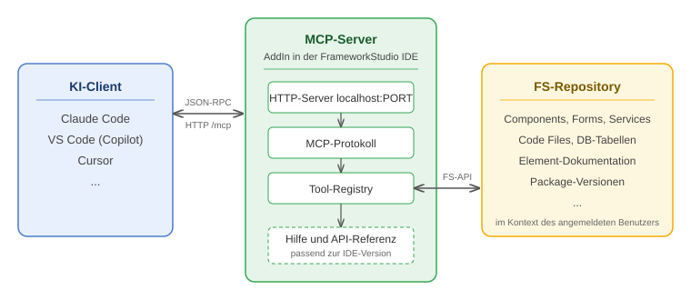

MCP-Server (Beta)
Der MCP-Server stellt eine Schnittstelle bereit, über die KI-Assistenten direkt auf das FrameworkStudio-Repository zugreifen können. Er implementiert das Model Context Protocol (MCP) und läuft als AddIn innerhalb der FrameworkStudio IDE.
Important
Der MCP-Server ist ab Version 4.9 als Beta-Feature enthalten. Funktionsumfang und Schnittstellen können sich in zukünftigen Versionen ändern.
Was ermöglicht der MCP-Server?
KI-Assistenten wie Claude Code, GitHub Copilot in Visual Studio Code oder Cursor können über den MCP-Server:
- Elemente auflisten und lesen — Components, Forms, Services, Code Files, DB-Tabellen und alle weiteren FS-Elementtypen
- Code inspizieren — den Quellcode einzelner Methoden und Member abrufen
- Suchen — nach Namen, im Code inkl. Methodensignaturen (eingrenzbar nach Namespace und Elementtyp), nach Abhängigkeiten und in der Element-Dokumentation
- Hilfe und API-Referenz nachschlagen — die FrameworkStudio-Hilfe passend zur IDE-Version durchsuchen und lesen sowie die veröffentlichte FS-API nachschlagen
- Änderungshistorie abfragen — Versionsverlauf von Elementen und Methoden, Unterschiede zwischen Labels und den CheckIn-Verlauf
Eine Übersicht aller Tools mit ihren Parametern enthält das Kapitel Tools.
Architektur

Der MCP-Server wird über das Menü Tools in der IDE gestartet und läuft als HTTP-Server auf localhost.
KI-Clients kommunizieren mit ihm über das standardisierte MCP-Protokoll (JSON-RPC über Streamable HTTP).
Die Tool-Registry stellt alle verfügbaren Operationen bereit. Jedes Tool greift über die FS-API auf das Repository zu — im Kontext des angemeldeten Benutzers.
Die FrameworkStudio-Hilfe ist im MCP-Server enthalten, die API-Referenz wird aus den mit FrameworkStudio ausgelieferten XML-Dokumentationen gelesen.
Beide passen damit immer zur installierten Version und sind ohne Internetzugang verfügbar.
Beim Verbindungsaufbau gibt der Server dem KI-Client zusätzlich Hinweise mit (instructions), wann er Hilfe und API-Referenz befragen soll, statt das Verhalten von FrameworkStudio aus dem Code abzuleiten.
MCP-Server starten und stoppen
Der MCP-Server wird im Menü Tools über MCP-Server starten (Beta) gestartet und über MCP-Server stoppen wieder beendet. Es ist jeweils nur der Menüpunkt aktiv, der zum aktuellen Zustand passt.
Der Server läuft, bis er über das Menü gestoppt oder die IDE beendet wird. Pro IDE-Instanz läuft höchstens ein MCP-Server.
Meldungen des Servers erscheinen mit dem Präfix [MCP INFO], [MCP WARN] bzw. [MCP ERROR] im Output-Fenster der IDE, beim Start z.B.:
[MCP INFO] 09:41:12 MCP server listening on http://localhost:31234/
[MCP INFO] 09:41:12 MCP server started on port 31234 (user: mmustermann)
Port-Ermittlung
Der Port wird automatisch aus dem Windows-Benutzernamen abgeleitet:
- Aus dem Benutzernamen (lowercase) wird ein Hashwert berechnet
- Der Hashwert bestimmt den Port im Bereich 30100–35099
- Falls der ermittelte Port belegt ist, wird der nächste freie Port verwendet (bis zu 10 Versuche)
Dadurch erhält jeder Benutzer auf einer Maschine einen eigenen Port, ohne manuelle Konfiguration. Solange der Port nicht belegt ist, bleibt er für einen Benutzer immer gleich; die Client-Konfiguration muss daher nur einmal angelegt werden.
Tip
Der tatsächlich verwendete Port wird beim Start im Output-Fenster der IDE angezeigt. Musste auf einen anderen Port ausgewichen werden, steht dort zusätzlich eine Warnung.
Important
Selbst wenn mehrere FS-Instanzen geöffnet sind, ist die Verbindung zwischen dem KI-Assistenten und dem MCP nur über eine der Instanzen möglich. Welcher MCP genutzt wird, ist durch die Konfiguration bei der Einrichtung definiert.
Protokollversionen
Der Server unterstützt die MCP-Protokollversionen 2025-11-25, 2025-06-18, 2025-03-26 und 2024-11-05. Die Version wird beim Verbindungsaufbau automatisch zwischen Client und Server ausgehandelt; fordert ein Client eine unbekannte Version an, antwortet der Server mit 2025-11-25.
| Transport | Endpoint | Für |
|---|---|---|
| Streamable HTTP | http://localhost:PORT/mcp |
aktuelle Clients (ab Protokoll 2025-03-26) — empfohlen |
| HTTP+SSE | http://localhost:PORT/sse |
ältere Clients mit Protokoll 2024-11-05 |
In der Client-Konfiguration daher den Typ http mit dem /mcp-Endpoint verwenden (siehe Einrichtung eines KI-Clients).
Note
Eine Verbindung (Session) verfällt nach 30 Minuten Inaktivität.
Der Server antwortet dann mit 404, und der Client baut selbstständig eine neue Session auf — ein Neustart des MCP-Servers ist nicht nötig.
Einrichtung eines KI-Clients
- FrameworkStudio starten und am Repository anmelden
- MCP-Server starten — Menü Tools → MCP-Server starten (Beta)
- Port ermitteln — den Port aus dem Output-Fenster übernehmen (siehe Port-Ermittlung)
- KI-Client konfigurieren — als Endpoint
http://localhost:PORT/mcpmit dem Transport-Typhttpeintragen (Beispiele siehe unten) - Verbindung prüfen — der Client sollte die Tools des Servers (
fs_list,fs_get_devobject, …) anzeigen
Note
Da der Port vom Windows-Benutzernamen abhängt, gehört die Konfiguration in die benutzerspezifischen Einstellungen des Clients. Eine im Projekt eingecheckte Konfiguration mit festem Port passt nur für einen Benutzer.
Claude Code
Den Server per Kommandozeile hinzufügen (<PORT> durch den Port aus dem Output-Fenster ersetzen):
claude mcp add --transport http frameworkstudio http://localhost:<PORT>/mcp
Ohne Angabe eines Scopes gilt der Eintrag nur für den aktuellen Benutzer im aktuellen Projektverzeichnis; mit --scope user steht er in allen Projekten zur Verfügung.
Alternativ kann der Server in der Datei .mcp.json im Projektverzeichnis eingetragen werden:
{
"mcpServers": {
"frameworkstudio": {
"type": "http",
"url": "http://localhost:<PORT>/mcp"
}
}
}
In Claude Code zeigt der Befehl /mcp den Verbindungsstatus und die verfügbaren Tools.
Visual Studio Code (GitHub Copilot)
Den Server in der MCP-Konfiguration eintragen — für alle Projekte in der Benutzer-Konfiguration (Befehl MCP: Open User Configuration in der Befehlspalette) oder für einen Workspace in der Datei .vscode/mcp.json:
{
"servers": {
"frameworkstudio": {
"type": "http",
"url": "http://localhost:<PORT>/mcp"
}
}
}
Alternativ führt der Befehl MCP: Add Server (Typ HTTP) durch die Einrichtung. Die Tools stehen im Copilot-Chat im Agent-Modus zur Verfügung.
Tip
Konfigurationen mit "type": "sse" nutzen den Alt-Transport für Protokoll 2024-11-05 und sollten auf "type": "http" mit dem /mcp-Endpoint umgestellt werden.
Voraussetzungen
- FrameworkStudio 4.9 oder höher
- Laufende IDE mit angemeldetem Benutzer
- Ein MCP-fähiger KI-Client (z.B. Claude Code, GitHub Copilot)
Einschränkungen
- Der Server ist nur lokal erreichbar (
localhost) — kein Zugriff von außen - Pro IDE-Instanz und Nutzer läuft maximal ein MCP-Server
- Der Server arbeitet im Kontext des angemeldeten FS-Benutzers — Berechtigungen gelten wie in der IDE
- Die Verbindung zwischen MCP und KI-Assistent ist immer 1:1, das heißt, dass man nur mit einer FS-Instanz gleichzeitig über den MCP arbeiten kann.
- In der Beta-Version stehen ausschließlich lesende Operationen zur Verfügung
Bekannte Limitierungen (Beta)
Lücken bei Elementtypen
DocumentationOwner kann über fs_search_names (Name) und fs_search_documentation (Inhalt) gefunden und über fs_get mit elementType=documentation_owner abgerufen werden.
Einzige Lücke: DocumentationOwner lässt sich nicht über fs_list auflisten.
Code Files werden von fs_list, fs_get_devobject, fs_search_names und fs_search_code unterstützt.
In der Code-Suche werden nur Member mit Code-Body durchsucht (Methoden, Konstruktoren, Destruktoren, Operatoren, Indexer, Properties mit get/set, Events mit add/remove) — nicht Felder, Event-Felder, Enum-Member und Typdeklarationen.
Lücken bei bestehenden Tools
| Bereich | Limitation |
|---|---|
| Code-Suche | fs_search_code durchsucht Signatur und Rumpf der Component-, Form-, Service-, ModularComponent-, GlobalEvent-, ServiceContract- und ServiceHost-Methoden sowie die Member mit Code-Body von Code Files. Methoden ohne Rumpf und Text außerhalb von Membern (Typdeklarationen, Attribute auf Typebene) werden nicht durchsucht. |
| Hilfesuche | fs_search_help verknüpft die Suchbegriffe mit UND und vergleicht sie als Teilstring — ohne Wortstammbildung, ohne Gleichsetzung von ae/ä bzw. ss/ß und ohne Relevanzbewertung außer Titeltreffer und Trefferzahl. Die Hilfe ist auf Deutsch; englische Begriffe treffen nur bei Bezeichnern. |
| API-Referenz | fs_get_api kennt nur veröffentlichte API ([DocfxBrowsable]) mit XML-Dokumentation. Ein fehlender Treffer beweist nicht, dass es die API nicht gibt. <inheritdoc/> wird nicht aufgelöst. |
| Links zur Online-Doku | Die url in den Ergebnissen der Hilfe- und API-Tools zeigt auf die Online-Doku der jeweiligen Version. Solange die Doku einer neuen Version noch nicht veröffentlicht ist, laufen die Links ins Leere; die Inhalte selbst sind im Server enthalten und davon nicht betroffen. |
| Element-Changelog | fs_get_element_changelog wertet nur Labels ab FrameworkStudio 3.7 aus; ältere Labels werden übersprungen. Für ältere Stände einer Methode fs_get_method_history bzw. fs_diff_method verwenden. |
| Historie importierter Packages | Ein importiertes Package enthält je Label nur den exportierten Stand, nicht die einzelnen CheckIns. Die History-Tools melden das mit historyAvailable: false und einem Hinweis (note), siehe Historie importierter Packages. |
| Zeitlimits | Ein Aufruf, der nicht innerhalb von 30 Sekunden in der IDE starten kann, wird verworfen; ein laufender Aufruf darf die IDE höchstens 30 Sekunden belegen. Aufrufe daher nacheinander senden und lange Historien in Abschnitten abfragen. |
| Dokumentationssuche | fs_search_documentation durchsucht Property-MLDoc, Form-Doku und DocumentationOwner-Doku — aber nicht die MLDoc direkt auf Component-Ebene. |
| Such-Cache | Der interne Cache für die Suchtools wird bei einem Label-Wechsel sowie nach 5 Minuten Gültigkeitsdauer neu aufgebaut. Ein CheckIn innerhalb desselben Labels ist daher erst mit dem nächsten Cache-Aufbau sichtbar. Ausnahme Code Files: Änderungen im offenen Code-File-Editor sind in fs_search_code bereits nach ca. 1 Sekunde suchbar. |
Sicherheitshinweis
Der MCP-Server verfügt über keine Authentifizierung.
Jeder Prozess auf der lokalen Maschine mit Zugriff auf den jeweiligen localhost-Port erhält uneingeschränkten Lesezugriff auf alle Repository-Daten — einschließlich Methoden-Quellcode und Datenbankschema.
Das ist für ein lokales Entwickler-Tool bewusst so gestaltet. Daraus folgt:
- Den Server nicht auf einer anderen Adresse als
localhostbetreiben - Den Server beenden, wenn die IDE-Session abgeschlossen ist
- Auf gemeinsam genutzten Entwicklermaschinen (z.B. Terminalservern) beachten, dass andere lokal angemeldete Benutzer ebenfalls Zugriff haben
Browser-Requests unterliegen zusätzlich einer Origin-Prüfung als Schutz gegen DNS-Rebinding: Erlaubt sind die Origins von Claude (https://claude.ai, https://app.claude.ai) und Loopback-Adressen (z.B. lokal laufende MCP-Clients).
Ein Request mit einem anderen, gesetzten Origin wird mit 403 abgelehnt und nicht verarbeitet.
Requests ohne Origin — also Nicht-Browser-Clients wie Claude Code — sind davon nicht betroffen.
Warning
Die Antworten des MCP-Servers enthalten Quellcode und Strukturinformationen aus dem Repository. Der KI-Client übermittelt diese Inhalte an den Anbieter des verwendeten Sprachmodells. Vor dem Einsatz klären, ob das mit den Vorgaben des eigenen Unternehmens zum Umgang mit Quellcode vereinbar ist.